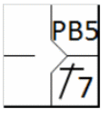
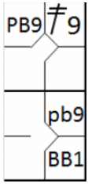
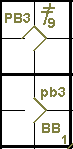
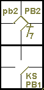

action { batter -> 1B7 }
/* Le coureur profite d'un 'pass ball' pour gagner une base */
action { runner1 -> PB }

Une balle passée est une statistique attribuée au receveur dont l'action est responsable de l'avance d'un ou plusieurs coureurs [OBR 9.13].
Le scoreur officiel doit attribuer une balle passée au compte du receveur lorsqu’il ne peut attraper ou contrôler une balle lancée de façon réglementaire qui aurait pu être attrapée ou contrôlée, avec un effort ordinaire, permettant ainsi à un ou plusieurs coureurs d’avancer [OBR 9.13(b)].
L'abréviation à utiliser en cas d'avance sur une balle passée est « PB » suivie du numéro de l'ordre de passage au bâton du joueur qui est au bâton au moment de la balle passée.
Exemple 49: Dans le cas où plusieurs coureurs avancent, l'abréviation « PB » (en majuscules) est utilisée pour le coureur de tête et « pb » (en minuscules) pour les coureurs suivants.
| WBSC | Transcription dans l'outil de scorage | Outil |
|---|---|---|
|
 |
/* Le premier batteur frappe un double dans le champ droit */ action { batter -> 2B9 } /* Le batteur suivant gagne la première base sur un 'base on ball' */ action { batter -> BB } /* Les deux coureur avancent sur un 'pass ball' */ action { runner1 -> pb , runner2 -> PB } |
 |
EXCEPTION: Comme pour les lancers fous, l'abréviation « PB » (en majuscules) précédé de « K » et du numéro de retraits sur prises du lanceur est utilisée pour le frappeur s'il atteint la première base après que le receveur ait manqué la troisième prise. L'abréviation « pb » (en minuscules) est utilisée pour les coureurs. Toutes les autres remarques concernant les lancers fous s'appliquent également aux balles passées.
« Effort ordinaire » pour le receveur signifie qu’il doit être capable d’attraper et de retenir la balle lancée dans la position délimitée par l’arc qu’il peut décrire avec son gant, en position accroupie, en attendant la balle.
Dans l' Exemple 50: , Le coureur atteint la deuxième base après que la balle lancée au cinquième frappeur ait été manquée..
| WBSC | Transcription dans l'outil de scorage | Outil |
|---|---|---|
|
 |
/* Le premier batteur frappe un hit dans le champ gauche */ action { batter -> 1B7 } /* Le coureur profite d'un 'pass ball' pour gagner une base */ action { runner1 -> PB } |
|
Exemple 51:
Alors que le jeu se poursuit, le même coureur profite d'une autre balle passée pour avancer jusqu'en troisième base,
et au même moment le frappeur atteint la première base en toute sécurité.
Pour cette dernière phase, l’abréviation « PB » (en majuscules) est enregistrée dans la case de la première base,
tandis que « pb » (en minuscules) est utilisé pour signaler l’arrivée du coureur en troisième base.
| WBSC | Transcription dans l'outil de scorage | Outil |
|---|---|---|

|
/* Le premier batteur frappe un hit dans le champ gauche */ action { batter -> 1B7 } /* Le coureur profite d'un 'pass ball' pour gagner une base */ action { runner1 -> PB } /* troisième strike relaché sur un pass ball, le batteur coureur gagne la première base, le coureur avance */ action { batter -> KSPB , runner2 -> pb } |
 |